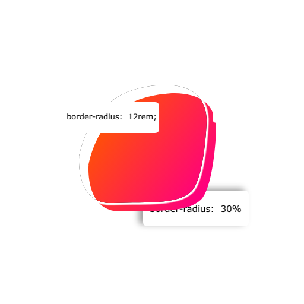

شروع کار
چرا پاترا؟
گیت هاب
خانه
کدوم ابزار رو میخوای؟
از بین ابزار ها هر کدومو که نیاز داری بردار!
پاترا جنریتور
پاترا گرادینت

پاترا رادیوزر
چرا پاترا؟
پاترا یه مجموع ابزار رایگان برای شما توسعه دهندگان وب هستش که باعث میشه خیلی از کار های رو مخی طراحی سایت مثل
ساخت گرادینت
و یا کار با
رادیوز ها
رو بتونید بی دردسر انجام بدید و خروجی اون رو به صورت کد سی اس اس تحویل بگیرید !